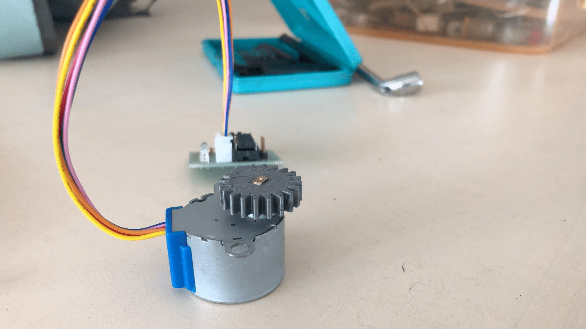
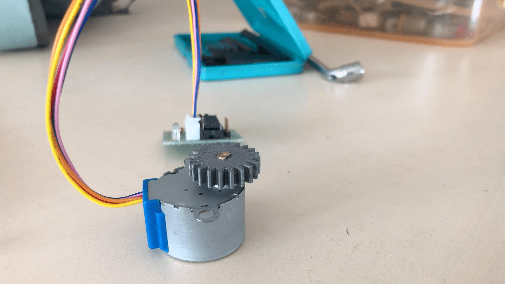

Introduction
Since I was a kid I had a keen interest in Astronomy and space science. I got a newtonian reflector telescope with an altazimuth mount as my birthday present and I wanted to modify it. My idea was to attach a system to it so it can move and locate celestial objects in the sky with a click on my PC.
I basically divided the project in three parts: 1)Mechanism 2)Electronics3)Documentation. This strategy helped me to compile and organize my work more easily.
Azimuth Rotation
My work on mechanisms started with the azimuth movement. Azimuth is similar to latitude.
I started my designs for gears in Fusion 360 and 3D printed them for prototyping.

The design was quite simple and easy to 3D print. I imported the gears from McMaster-Carr components.I used a Cetus 3D printer to print the gears.
You’ll notice that the smaller gear is different from the design and that’s because I had to file it after due to some reasons. At this point I felt satisfied with my work and felt a sense of accomplishment.
I then attached the gears to the mount and started working on the motor holder design.
 

I used a 5V 28BYJ-48 DC unipolar stepper motor at first. I had to start coding and get used to arduino and so my electronics part of the project started from here.
By the end of the day I had already designed the motor holder which was being 3D printed. I was happy with my work and expected to finish my project in 2 weeks butI didn’t account for the possibility of failure which I would further encounter.